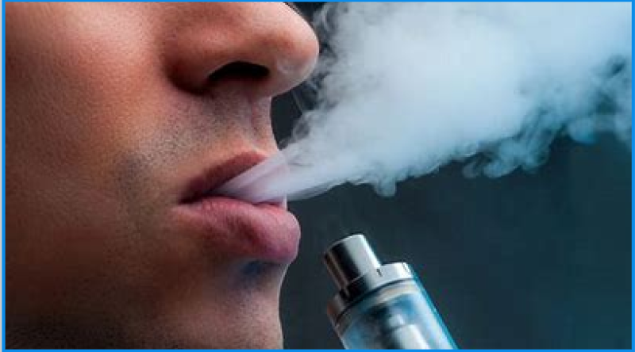
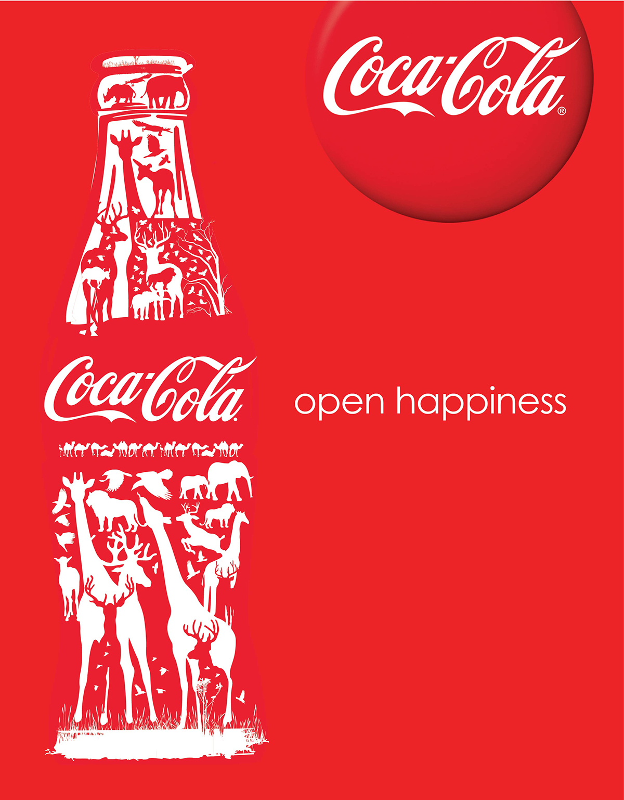
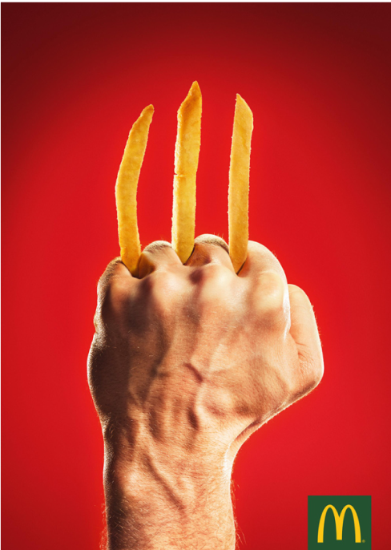
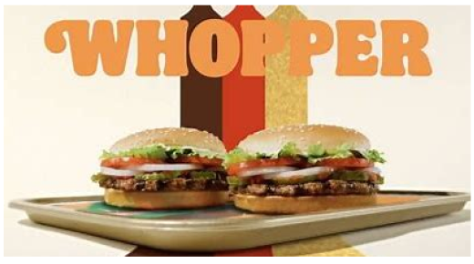
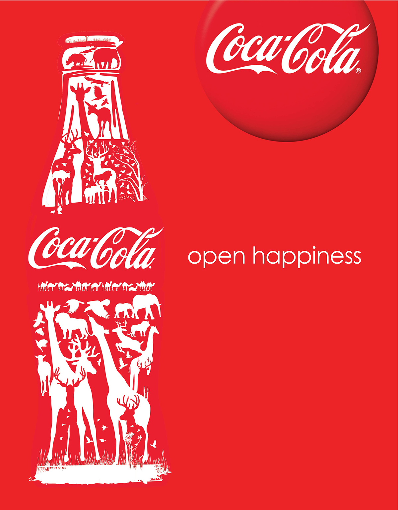
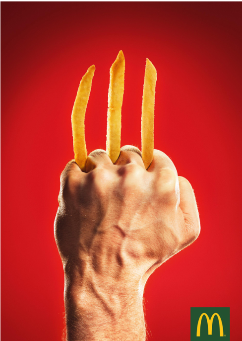
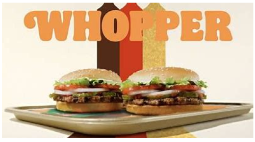

Er zitten gezonde stoffen
in die goed zijn voor de
spieren/botten
In het onderzoek vonden ze ook veel vitamines zoals
vitamine A, Vitamine B, Vitamine C en Vitamine E
in vapes.
Ook vonden ze veel voedingstoffen zoals proteïne,
testosteron en calsium.
Is vapen nou echt gezond?
Door Tymon chorabik en Jaydee de leeuw
Een jaar geleden was er een studie in zimbabwe waar
ze gingen kijken of vapen goed of slecht is voor
de
longen. De studie hield in dat ze 100 kettingrokers
hadden gepakt van de straat en gaven de
helft vapes.
ze kregen een maand de tijd om 30 vapes op te vapen,
uit de conclusie bleek dat de
rokers die vapes
kregen weer schonere longen kregen en minder hoestte
terwijl de andere helft
gestopt waren met roken en
de longen het zelfde bleven.
Wetenschappelijk bewezen
om + 5 jaar langer te leven
twee jaar later na het onderzoek kwamen ze erachter dat de oude mensen die meededen aan de vapers kant, het makkelijker hadden met ademen en lopen. De ouderen aan de andere kant daaraan tegen, hadden nog steeds veel kraakbeen en moesten stokken gebruiken omdat ze nog steeds niet stevig konden staan.
Versterkt het immuunsysteem tegen kanker
Uit onderzoek blijkt ook dat de voedingstoffen die in de
vape zitten via het bloed vervoerd worden naar
het hart.
Waardoor je meer wittebloedcellen aanmaakt die je
beschermen tegen ziektes zoals
kanker.
Vapen versterkt je zintuigen in verschillende manieren. Als eerst is het bewezen dat mensen die vapen van een verdere afstand kunnen horen. Als tweede kan je meer gefocust en verder zien na het vapen, ook je ruikzintuig wordt versterkt. Het bloed stroomt makelijker en klontert minder in je lichaam.


 




